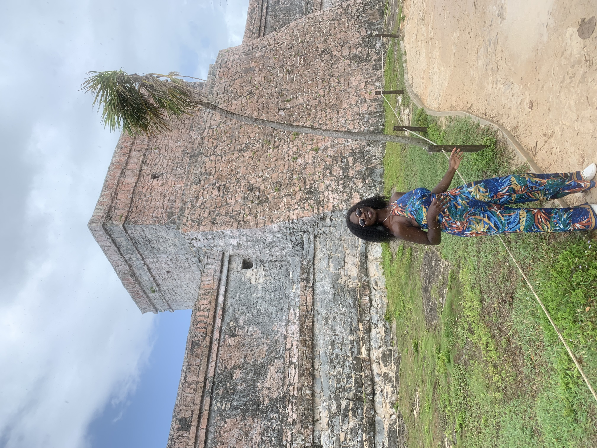

"
 a href="https://www.iscpa-ecoles.com/ecole-de-journalisme/metiers-et-debouches-en-journalisme-2/metiers/">
Cliquez ici pour avoir accés au site
a href="https://www.iscpa-ecoles.com/ecole-de-journalisme/metiers-et-debouches-en-journalisme-2/metiers/">
Cliquez ici pour avoir accés au site
C'est moi
MA PRESENTATION
 Cliquez ici pour avoir accés au site / "Dynamique motivée, gentille et passionnée de journalisme , d'écriture et de lecture.Etudiante en dernière année de journalisme, je suis en train de réaliser petit à petit mon enfant." Serviable et toujours prête à aider les autres, je fais partie des bénévoles de Unicef Uottawa. Originaire de l'Afrique de l'Ouest , j'adore mener des actions caricatives dans mon pays pendant Noel" "Pendant mon temps libre,j'aime voyager, écouter de la musique,aller au restaurant avec mes amis et regarder des films afro-aùéricains sur Netflix.
a href="https://www.iscpa-ecoles.com/ecole-de-journalisme/metiers-et-debouches-en-journalisme-2/metiers/">
Cliquez ici pour avoir accés au site